x
HOW TO USE

MOVE THE CAMERA
Click
and
move
the mouse to change the position of the
viewer

ZOOM
Scroll
to
zoom
in and out
DIRECT KINEMATICS
The
Direct Kinematics
Mode solves the problem
"Given a set of angles, where is the end-effector of the robot?"
INVERSE KINEMATICS
The
Inverse Kinematics
Mode solves the problem
"Given a position in the space, what must be the angles of the robot for the end-effector to be in that position?".
In general, it is a
difficult problem
. This application solves the problem with an
iterative algorithm
which uses a
gradient descent
approach.
INTERPOLATION
The user can choose what kind of
interpolation
is used to generate the
trajectories
.
The
linear interpolation
generates trajectories in which the robot passes from a position to another with a
constant angular velocity
, following a
linear profile
of the joints position.
The
cubic interpolation
generates trajectories in which the robot passes from a position to another according to a
cubic profile
of the joints position. It is more realistic since it forces the
initial
and
final velocity
to be equal to
zero
, as it is in the
real world
.
CREDITS
Models:
Abandoned Warehouse Interior Scene - Aurélien Martel, 6 Axis Industrial Robot Arm - Jayson Stauffer
Music:
Funky Suspense - Benjamin Tissot (also known as Bensound)
Developed
by
Marco Pennese